Stream Object Configuration
Data Stream and Agent Configuration
User Settings
All Agents will individually be associated with a Collection. This Collection may or may not be different from the default Collection set for your Data Stream. This setting will always be listed among the rest of the user settings.
There are a number of Agents that do not require any settings, for example, the Event Printer Agent. This Agent simply prints events and you do not need to specify settings such as a server URL, username, password, or upload a file.
Other Agents, however, require settings to be filled in before you can successfully run the stream. For example, consider having a CSV listener Agent in your Data Stream. The CSV listener Agent will require you to specify the following values:
- Specify a polling interval (seconds)
- Upload a CSV file
- Specify the CSV definition (name of each column in the CSV file along with what data type the values in each column are)
If these values have been provided correctly, the data will be read from the CSV file you specified when you publish your stream.
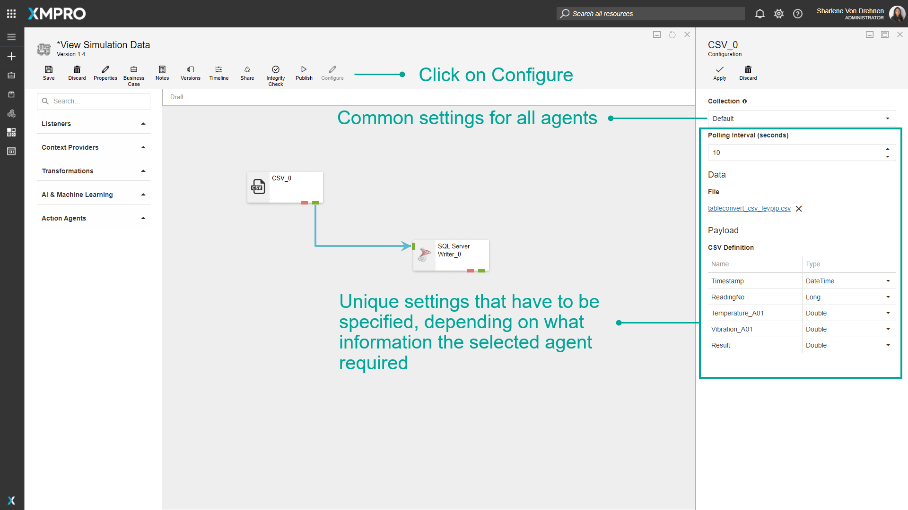
Input Mapping and Arrow Configuration
Some Agents allow inputs to be mapped if the Require Input Map property has been set to true during packaging. What Input Mapping allows you to do is to specify that a specific Agent receives its input in a specific structure. This causes the arrows leading to an Agent to be made configurable and will allow the user to map the inputs of an agent to incoming attributes, for example:
Consider having the following Agents in a stream:
- CSV Listener
- SQL Server Writer
The CSV Listener is configured to get data from a file that contains the following headings:
- Timestamp (of type DateTime)
- ReadingNo (of type Long)
- Temperature_A01 (of type Double)
- Vibration_A01 (of type Double)
- Result (of type Double)
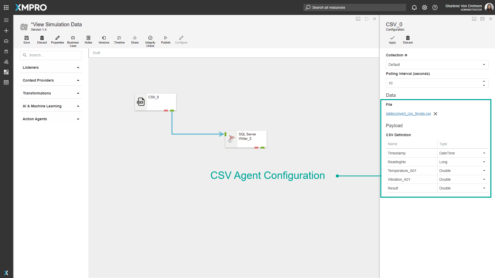
The task the SQL Server Writer needs to perform is to write the data it receives to a SQL Server database, but it expects the structure of the data to be in a specific format. The table we need to write the data to has the following columns:
- ID (bigint, identity column)
- ReadingNo (bigint)
- Temperature (float)
- Vibration (float)
- Results (float)
- Timestamp (datetime)
For the data to be written to the database in a specific format, you need to map the correct columns in the CSV file to the correct SQL Server table columns. To do this, both the CSV Listener and the SQL Server Writer Agents need to be configured first. To configure an Agent, click on the Agent and then on the “Configure” button. Fill in all the details required, for example, the SQL Server instance name and credentials.
Next, you can go ahead and configure the Input Mapping by clicking on the arrow that connects the CSV Listener and the SQL Server Writer Agents. Then, click on “Configure“. Choose which column should be mapped to which column by selecting the correct value from the drop-down menu for each row. Please note that the data types of the items being mapped to each other need to be the same. If not, the value in the left column will be disabled and you will not be able to select it.
Remember that, even though the same principle applies to all Agents, input mapping might be done differently for different Agents.
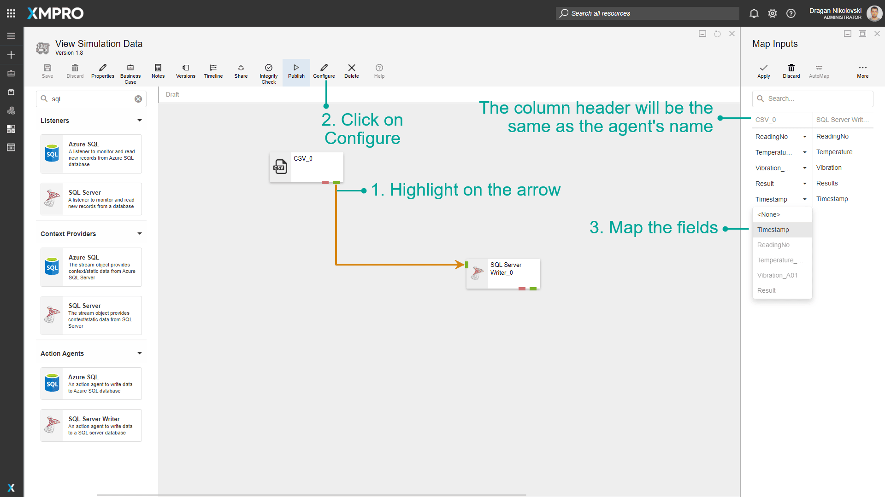
Mapping Functions
In some cases, you might have to map a large number of inputs for an Agent. Some functions have been implemented to make the process of mapping a large number of fields easier, such as Match by Expression, AutoMap, and Show Unmapped.
AutoMap
By clicking on the “AutoMap” button, Data Stream Designer will match all the fields that are common between the Agents involved, for example, if you look at the stream in the image below, you will notice that both the SQL Server Writer Agent and the CSV Listener has the fields listed below in common, which will automatically be mapped if they have the same data type.
- ReadingNo
- Timestamp
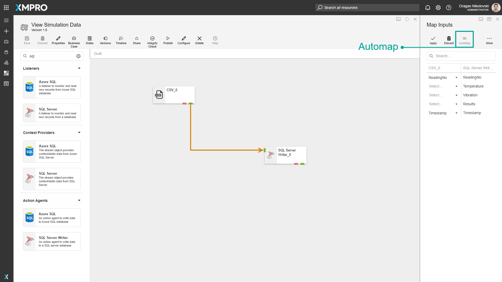
Match by Expression
The Match by Expression function allows for an expression to be used to make mapping a large number of fields easier and quicker. The fields can be mapped by using any of the following options:
- Prefix
- Postfix
- Expression
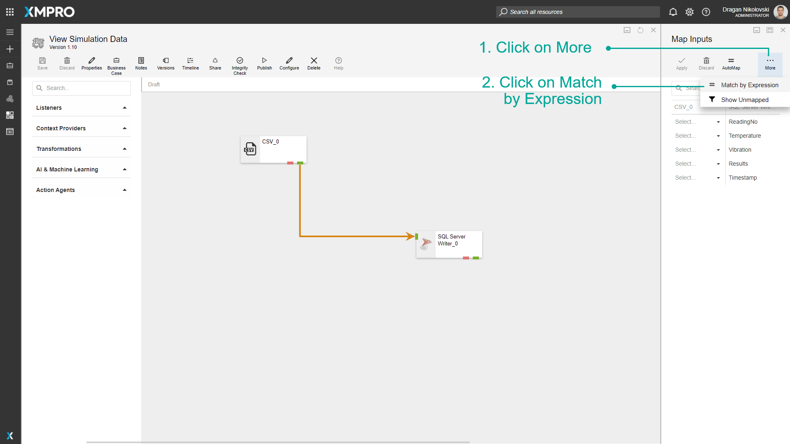
The Prefix option allows you to specify that columns should be matched based on the first part of a column name, for example:
- In the CSV listener Agent, there is a column named “A01_Temperature“
- In the SQL Server Writer Agent, there is a column named “Temperature“
In the images below, “A01” is specified as the postfix. Based on the prefix given, the column “A01_Temperature” in the CSV Listener can be matched to the column “Temperature” in the SQL Server Writer Agent.
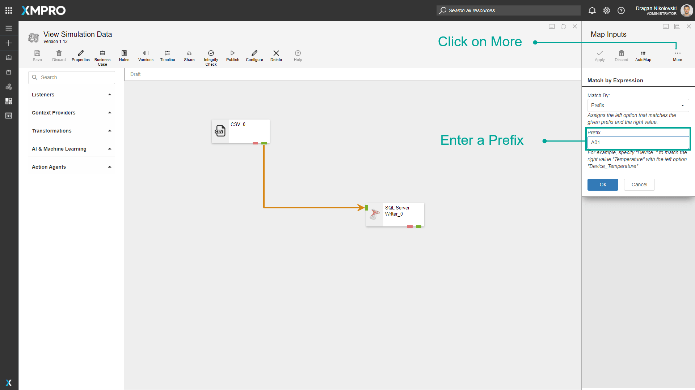
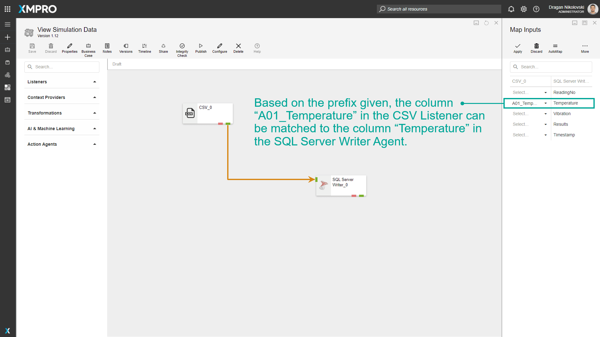
The Postfix option allows you to specify that columns should be matched based on the last part of a column name, for example,
- In the file uploaded to the CSV listener Agent, there are columns named “Temperature_A01“ and “Vibration_A01“
- In the table referenced in the SQL Server Writer Agent configurations, there are columns named “Temperature“ and “Vibration“
In the images below, “_A01” is specified as the postfix. Based on the postfix given, the columns “Temperature_A01“ and “Vibration_A01“ in the CSV Listener can be matched to the columns “Temperature“ and “Vibration“ in the SQL Server Writer Agent.
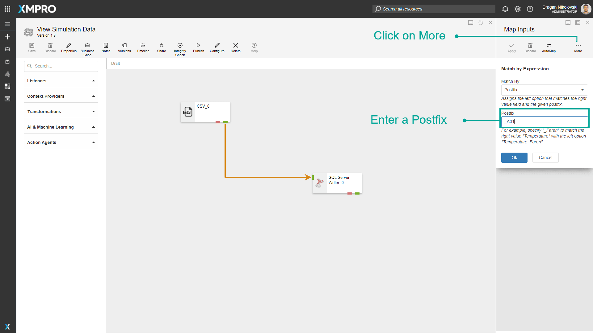
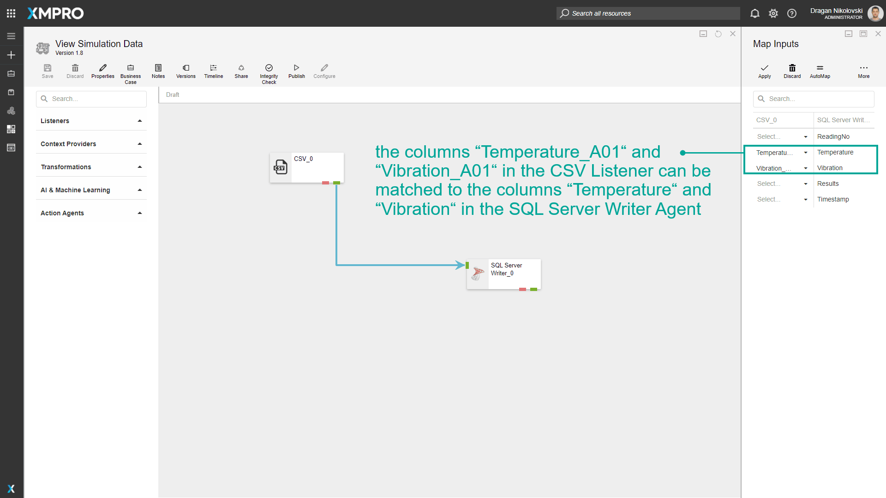
The Expression option allows you to use a regular expression to match the columns, for example,
- In the file uploaded to the CSV Listener Agent, there is a column named “Device_Temperature_Fahrenheit“
- In the table referenced in the SQL Server Writer Agent configurations, there is a column named “Temperature“
In the images below, “Device_$1_Fahrenheit” is used as the regular expression. Based on this expression, the column “Device_Temperature_Fahrenheit” in the CSV listener is mapped to the column “Temperature” in the SQL Server Writer Agent.
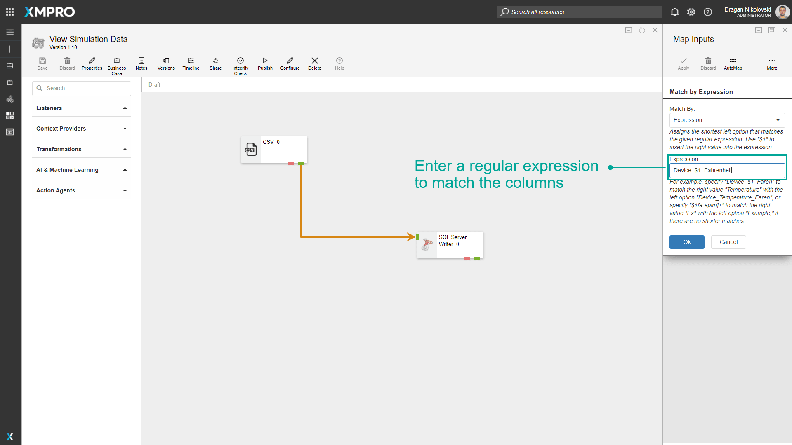
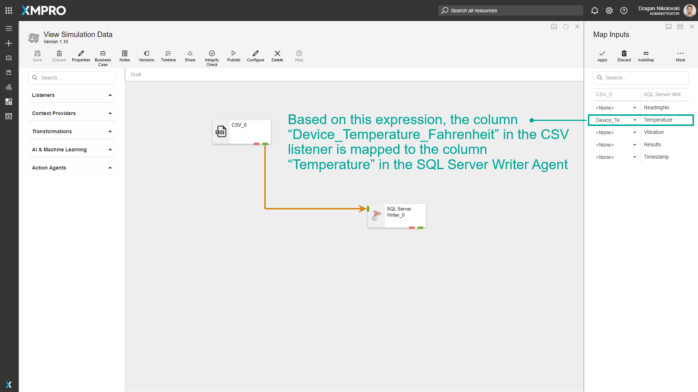
Show Unmapped
The Show Unmapped function allows you to filter the rows displayed, based on if the columns have been mapped. If you chose to filter items based on if they are mapped or not, all the records that haven’t been mapped yet will be listed, for example,
- In the image below, “ReadingNo” and “Timestamp” have been mapped for both Agents using the AutoMap function. However, there are three records that remain that need to be mapped. In some scenarios, there might be a lot more records with some being mapped and others not.
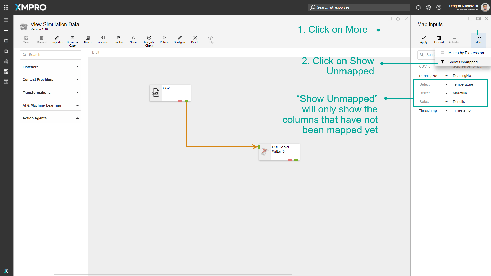
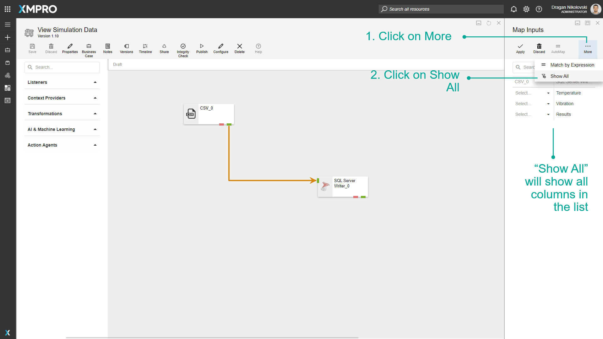
Further Reading
Last modified: November 24, 2025